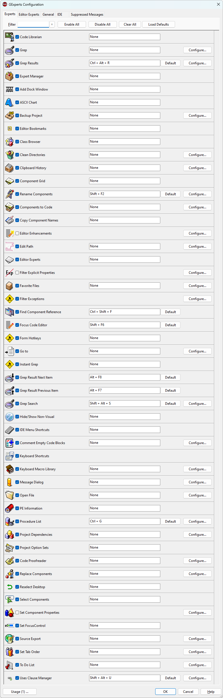

GExperts Configuration |
|
Here you can configure the various parts of GExperts. The window has tabs for configuration of the individual experts, general settings, editor experts, IDE enhancements, and code editor enhancements.
The first tab, shown below, allows you to turn on and off the individual experts using the checkbox next to the expert name. If you uncheck an expert, it will be removed from the GExperts menu. You can also configure the shortcut key used to activate each expert. GExperts makes no attempt to ensure the assigned shortcut key is unique and many common shortcuts are already in use by the IDE's main menu, various context menus, or the code editor. If you find that one keystroke works and a second one doesn't, it is likely because the IDE has reserved the second shortcut for internal use. The IDE's help file lists most of the editor's reserved keystrokes for each keymapping, but not all of them. Note that you can scroll down the list on this tab to see the remainder of the experts.
The general settings, editor experts, IDE enhancements, and code editor enhancements are described in separate help sections. 
|